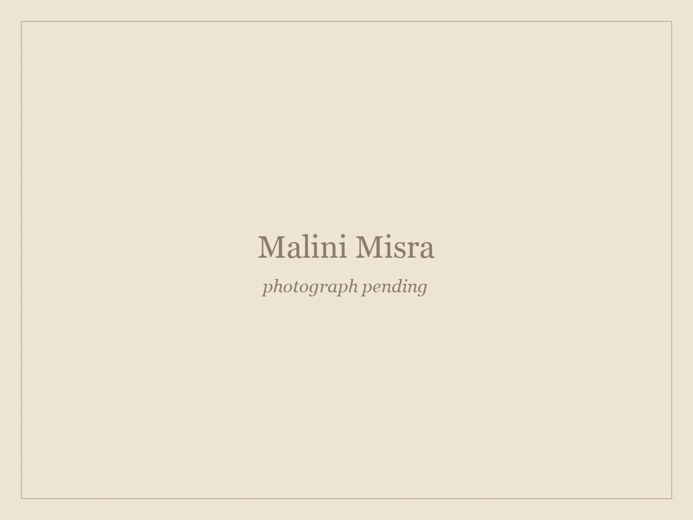
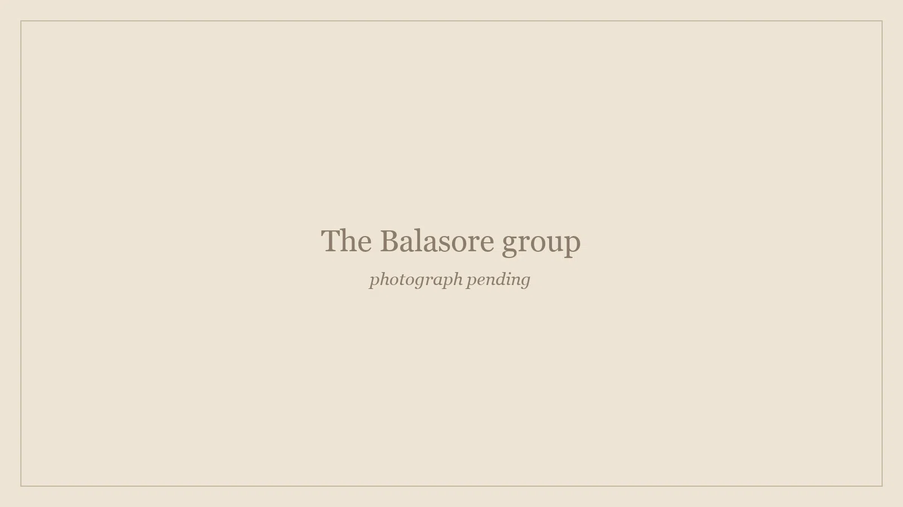
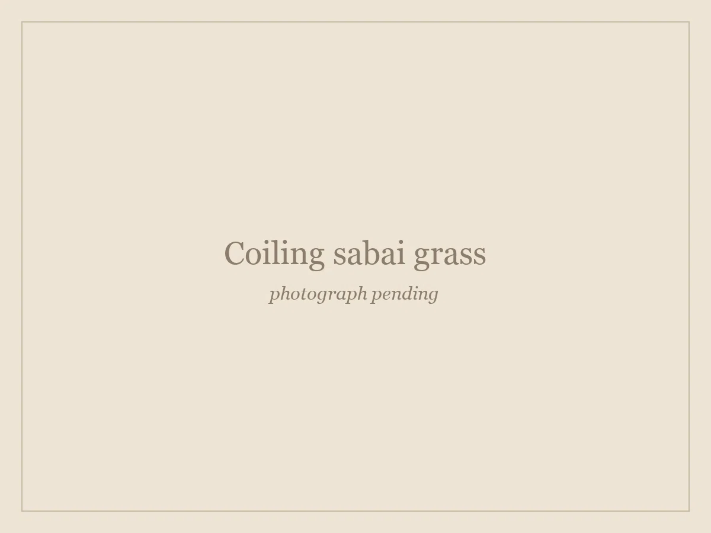
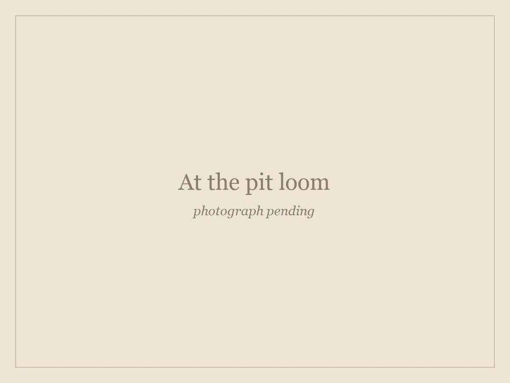

Stories
Every piece in the catalogue was made by someone. These are the people, and the reason any of this exists.
The founder
Khoj Collection was founded by Malini Misra. For the past six years, living in Delhi while her husband was posted there, she has worked on a single question: how do you get the craft of Odisha in front of people who will pay properly for it, without taking the craft away from the women who make it?
The answer was to do two different things at once. For sabai grass, design the pieces herself and work directly with one group of artisans until they are made well and made consistently. For handloom, design nothing. Go to the clusters that have woven dohars and bandha for generations, find the good work, and pay a price that makes it worth continuing.

We are Sabai Grass artisans from Northern Odisha, sharing our creations with joy and gratitude.The Balasore self-help group

The thirty
The sabai grass work is made by a self-help group of thirty women artisans in Balasore district, in the north of the state. They work to designs drawn with Malini, which is what makes this different from most craft sourcing. The pieces are not found and resold. They are designed for a market the group cannot reach on its own, and then made by the group.
Sabai grows wild across northern Odisha and has been coiled into rope and household baskets there for as long as anyone has recorded it. It is a skill that passes between women, in the home, without a school anywhere in the chain.
What the income does is less romantic and more important: it is earned directly, held directly, and does not pass through anybody else's hands on the way.
How sabai is worked
Sabai is not woven. It is coiled: a bundle of grass is wound in a continuous spiral, and each turn is stitched to the one below it with a thin strand split off the same grass. There is no frame, no mould and no over-under lattice. The shape is held entirely by how tightly the maker pulls each stitch.
That is why a coiled basket and a rattan one look nothing alike close up, and why the work cannot be hurried. A lidded basket takes several days. A coaster takes an evening, which is why coasters are what a new artisan learns on.


The clusters
The handloom side works differently. Dohars come from around Sambalpur; naturally dyed runners from Kotpad in Koraput, where cloth is dyed with aal root and iron before it is ever woven; potlis from the silk looms at Nuapatna; bandha and pasapalli sarees from Bargarh.
We design none of it. These are grammars of motif and technique that took generations to settle, and they do not need a visiting designer. What they need is somebody to buy consistently, at a price that makes a young weaver think the loom is worth staying at.